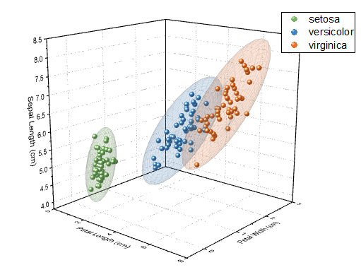
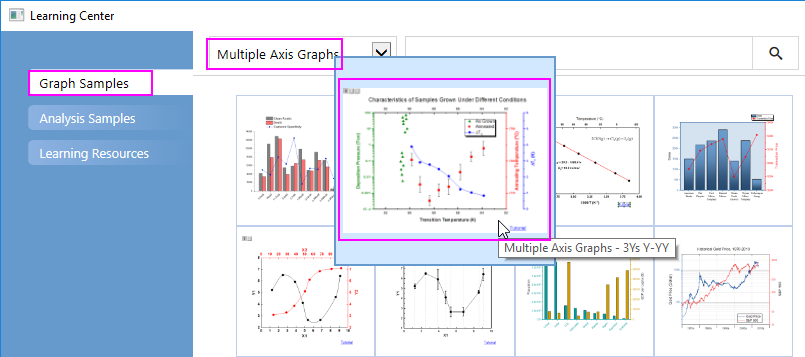
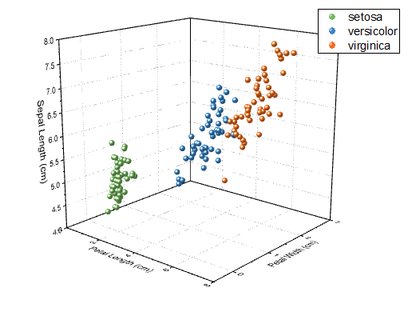
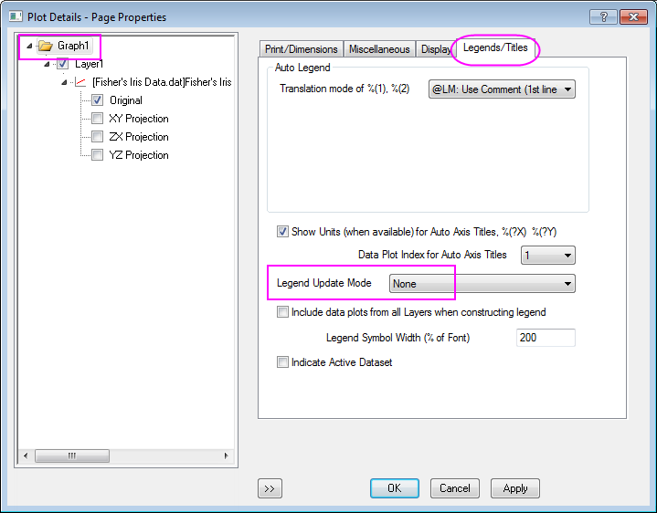
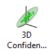
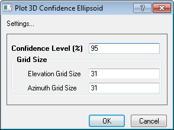

Transparente parametrische Oberflächen in Kombination mit einem Punktdiagramm
3D-TransParaSurf-Scatter
Zusammenfassung
Dieses Tutorial zeigt Ihnen, wie Sie 3D-Punktdiagramme erstellen und diese mit parametrischen 3D-Oberflächen kombinieren.
- 
Origin-Version mind. erforderlich: Origin 2016 SR0
Was Sie lernen werden
- 3D-Punktdiagramme mit Farbindex erstellen
- Eine 3D-Konfidenzellipse mit App zeichnen
Schritte
3D-Punktdiagramme mit Farbindex erstellen
- Wählen Sie im Menü Hilfe: Lernzentrum oder drücken Sie die Taste F11, um das Lernzentrum zu öffnen. Wählen Sie die Registerkarte Diagrammbeispiel und wählen Sie dann Diagramme mit mehreren Achsen in der Auswahlliste. Klicken Sie doppelt auf das Diagrammbeispiel unten, um das Beispiel "3D Scatter Ribbon and Wall Graphs - 3D Confidence Ellipsoid for 3D Scatter" zu öffnen.

Hinweis: Dieses Tutorial ist mit der Datei <Origin EXE Path>\Samples\Statistics\Fisher's Iris Data.dat verbunden.
- Markieren Sie die ersten Spalten und wählen Sie im Menü Zeichnen > 3D: 3D Punkt, um ein 3D-Punktdiagramm zu zeichnen.
- Klicken Sie doppelt auf das Diagramm, um den Dialog Details Zeichnung zu öffnen. Wählen Sie Original auf der Zeichnungsebene im linken Bedienfeld. Wählen Sie dann im rechten Bedienfeld auf der Registerkarte Symbol für die Farbe die Option Nach Punkten und setzen Sie Farboptionen auf Index: Col(E): "Species". Wählen Sie eine Farbliste aus, die Sie auf die Symbole anwenden möchten.
- Klicken Sie mit der rechten Maustaste auf die Diagrammlegende und wählen Sie Legende: Legende rekonstruieren im Kontextmenü. Das 3D-Punktdiagramm wird, wie unten gezeigt, erzeugt:

- Um sicherzustellen, dass die Legende nicht während der nächsten Schritte überschrieben wird, wählen Sie Format: Seite im Menü, um den Dialog Details Zeichnung zu öffnen. Gehen Sie zur Registerkarte Legenden/Titel und wählen Sie Kein in der Auswahlliste Modus Legende aktualisieren.

Transparente parametrische Oberflächen zum aktiven Diagramm hinzufügen
- Laden Sie die 3D Confidence Ellipsoid auf dieser Seite des Dateiaustauschs herunter: 3D Confidence Ellipsoid
- Ziehen Sie die App in die Software Origin, um sie zu installieren. Das Symbol 3D Confidential Ellipsoid wird dann in der Apps-Galerie aufgelistet.
 - Aktivieren Sie das Diagramm und klicken Sie auf die Schaltfläche 3D Confidential Ellipsoid in der Apps-Galerie. Der Dialog Plot 3D Confidence Ellipsoid wird geöffnet. Übernehmen Sie die Standardeinstellungen und klicken Sie auf OK. Es werden drei Ellipsen zu dem Diagramm hinzugefügt, jede umhüllt jeweils eine Gruppe von Daten mit der gleichen Farbe.

Das Diagramm sollte am Ende folgendermaßen aussehen: